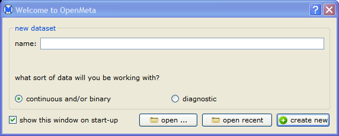
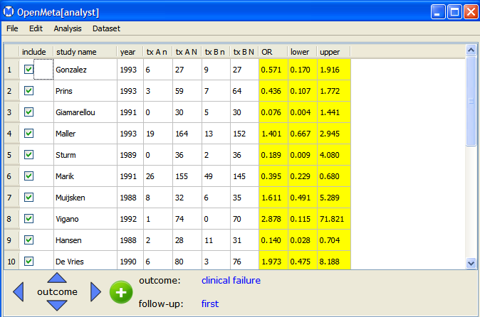

To start Open Meta-Analyst, open the folder where you extracted the Open Meta-Analyst program files and double-click the file
This opens the Welcome to OpenMeta dialog, as shown below.

In the dialog, you can create a new data set or open an existing data set. As an example, open the sample data set amino.oma by the following steps:
This opens the main Open Meta-Analyst window, as shown below.

The next section describes the Open Meta-Analyst window in detail.
Tip: You can create a shortcut to Open Meta-Analyst by dragging the OpenMetaAnalyst.exe icon onto the desktop.
| Introducing Open Meta-Analyst | The Open Meta-Analyst Window | |